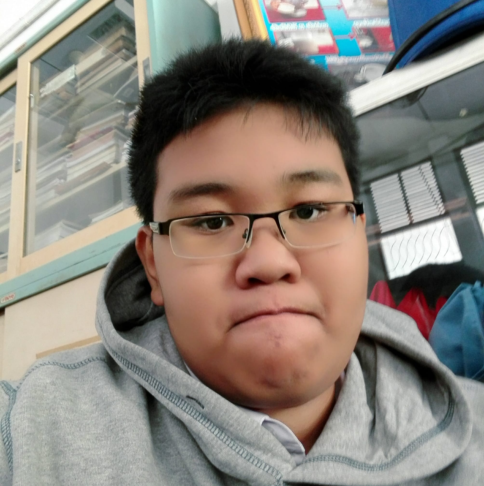

บิดา อุดมชัย แซ่ลี้ เบอร์โทรศัพท์ ไม่มี อาชีพ ค้าขาย สถานที่ทำงาน บ้าน
มารดา ปิยะธิดา วรรณโนนาม เบอร์โทรศัพท์ ไม่มี อาชีพ ค้าขาย สถานที่ทำงาน บ้าน
ผู้ปกครอง อุดมเดช แซ่ลี้ เกี่ยวข้องเป็น ลุง เบอร์โทรศัพท์ 0874302384 อาชีพ ค้าขาย สถานที่ทำงาน บ้าน
จำนวนพี่น้อง มีทั้งหมด 2 คน
ชื่อ ปัญญากร แซ่ลี้ อายุ 17 ปี เรียนระดับ ประกาศนียบัตรวิชาชีพ ชื่อสถานศึกษา วิทยาลัยเทคนิคกาฬสินธ์ุ
ชื่อ อดิลักษณ์ แซ่ลี้ อายุ 13 ปี เรียนระดับ ระดับมัธยม ชื่อสถานศึกษา โรงเรียนอนุกูลนารี